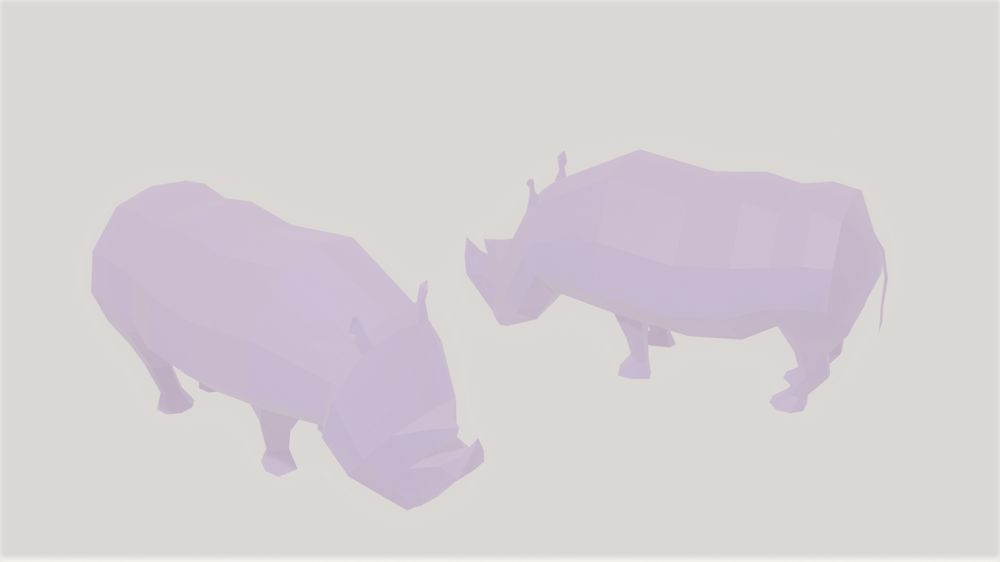

Welcome To My life
Hello there!안녕하세요, 컴퓨터공학과 20학번 황다희입니다. 집에서 반려견 초코와 함께 살고 있습니다. 유튜브에서 J.E.B라는 이름의 유튜버가 여러 음악을 매쉬업하는 것을 듣는 것을 좋아하고, 그 중 f(x)의 All Mine과 Madeon의 All My Freinds의 매쉬업을 가장 좋아합니다.
안녕하세요, 컴퓨터공학과 20학번 황다희입니다. 집에서 반려견 초코와 함께 살고 있습니다. 유튜브에서 J.E.B라는 이름의 유튜버가 여러 음악을 매쉬업하는 것을 듣는 것을 좋아하고, 그 중 f(x)의 All Mine과 Madeon의 All My Freinds의 매쉬업을 가장 좋아합니다.

요즘에는 힐링게임 저니로 유명한 게임 회사인 Thatgamecompany의 모바일 게임 '스카이: 빛의 아이들'을 하고 있습니다. 게임에서 다양한 나라의 사람들을 만나 이야기 하고 게임 내에서 서로 도우며 아름다운 그래픽 속에서 매일매일 힐링하고 있습니다. 튜토리얼은 조금 불친절하지만 할 때마다 즐거운 게임입니다. 모바일 게임에 관심 있으신 분들은 한 번 해보세요. 강추.
평소에 그림 그리는 것을 매우 좋아합니다. 크로키도 자주 하지만, 가끔씩 반려견의 귀여운 모습, 우스꽝스러운 모습을 그리기도 합니다.
최근에는 블렌더를 이용하여 모델링도 독학하는 중입니다. 초보라서 높은 퀄리티의 모델링은 못하지만, 동물 사진을 보고 로우폴리 모델링을 하며 천천히 공부해나가고 있습니다.